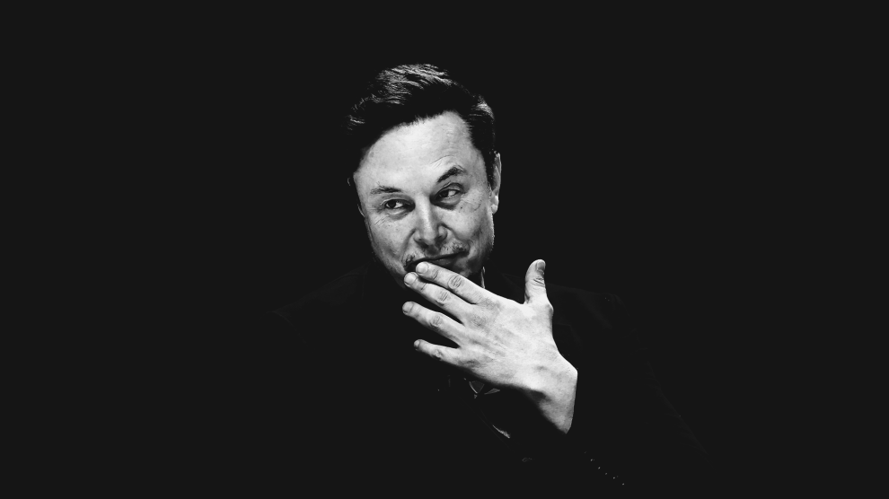

Elon Musk
The man who made the rocket landing

Elon Musk Innovator, visionary, SpaceX, Tesla, Neuralink, revolutionizing space, electric cars, AI, Mars colonization, billionaire, disruptor, tech mogul, future.
Here's a time line of Elon Musk life:
- 1971: Elon Reeve Musk is born
- 1983: Creates Blastar
- 1989: Moves to Canada
- 1992: Goes to Penn, Stanford
- 1995: Founds Zip2 Corporation
- 1999: Sells Zip2
- 2000: Marries Justine Wilson
- 2000: X.com merges with Confinity to form PayPal
- 2002: Becomes a U.S. citizen
- 2002: First child is born, passes away
- 2002: Sells PayPal, Founds SpaceX
- 2002: The Musk Foundation
- 2004: Xavier and Griffin Musk are born
- 2004: Investment in Tesla Motors
- 2006: Damian, Saxon, and Kai Musk are born
- 2006: SolarCity is founded
- 2008: Divorces first wife, Justine Musk
- 2008: Falcon 1 reaches orbit
- 2008: Roadster is launched
- 2010: Marries actress Talulah Riley
- 2010: SpaceX demonstrates reusable rockets
- 2012: Divorces second wife, Talulah Riley
- 2012: ISS docking
- 2013: Remarries Talulah Riley
- 2013: Plans for Hyperloop and battery production with Tesla
- 2015: Co-founds OpenAI
- 2016: Founds Neuralink and The Boring Company
- 2016: Divorces Talulah Riley
- 2018: Launches Falcon Heavy
- 2018: Starts dating Grimes
- 2020: X Æ A-12 Musk is born
- 2020: Tesla became the world’s most valuable carmaker
- 2020: 1st manned mission - Crew Dragon
- 2021: Strider and Azure Musk are born
- 2021: Exa Dark Sideræl Musk is born
- 2021: First all-private civilian crew (Inspiration4)
- 2022: Acquires Twitter and renames it X
- 2023: Starship’s test flight trial (failed)
- 2023: Techno Musk is born
- 2024: Elon Musk’s 12th child is born
- 2024: 3rd Starship test flight success
- 2024: Ranks third in Bloomberg Billionaires Index
"Borlaug's life and achievement are testimony to the far-reaching contribution
that one man's towering intellect, persistence and scientific vision can make to
human peace and progress."